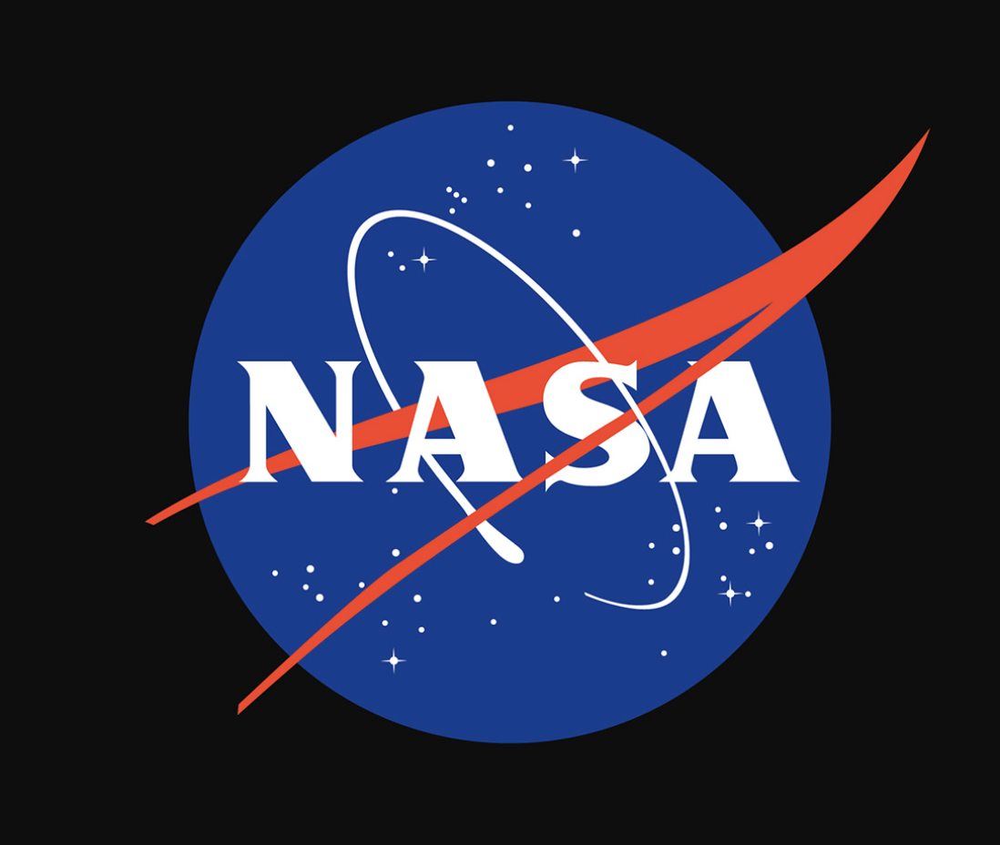
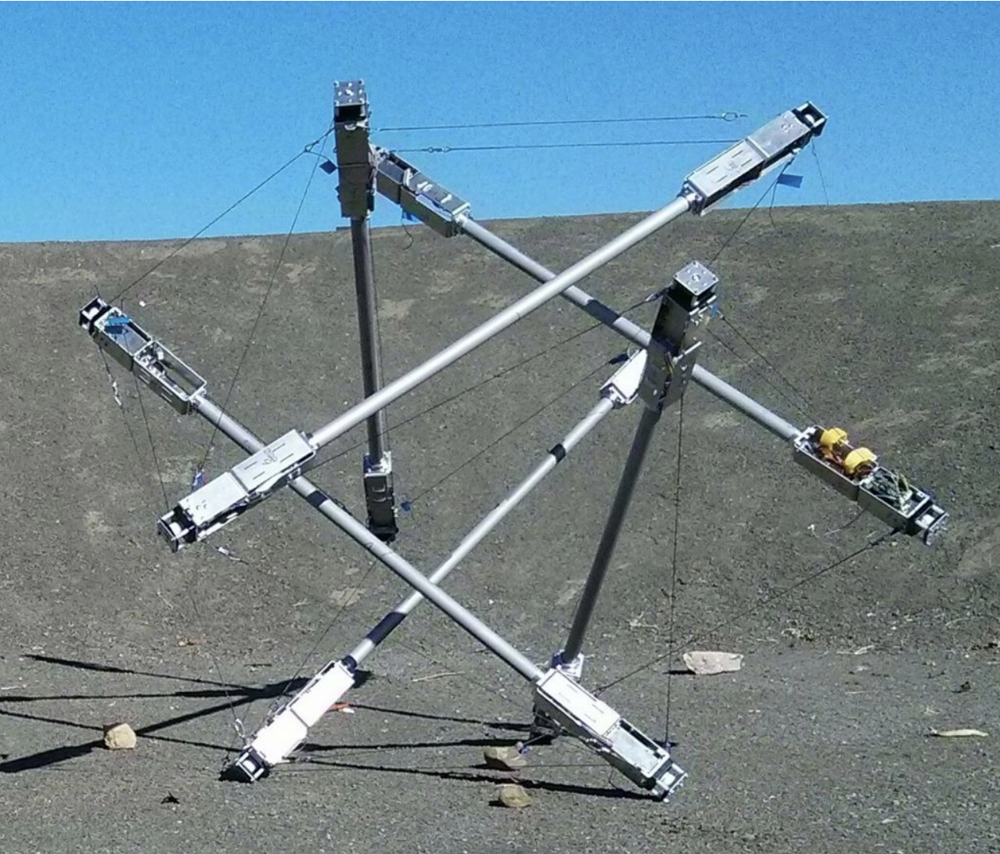

Development and scaling of a motor-actuated tensegrity robot based on NASA’s Super Ball Bot concept.

1. Overview
I developed and scaled a motor-actuated tensegrity robot based on NASA’s Super Ball Bot concept. The project explored how a compliant, distributed structure could absorb impacts and move across uneven terrain while integrating mechanical actuation, controls, and research testing.
2. Approach
I designed the robot around carbon-fiber rods, climbing string, and servo actuators, then built an omnidirectional control system with a Pololu controller. A key challenge was coordinating the tensioned structure, actuator placement, and control response while keeping the system robust enough for repeated testing.
3. Results
I scaled the design to approximately five feet in diameter and tested the robot through repeated 30-foot drop tests. The work contributed to a research paper for SciTech 2027 and strengthened my experience connecting mechanical design, controls, fabrication, and experimental validation.
4. Reflection
[Write what you learned, how the work changed your engineering process, and what you would improve in a next iteration.]
Skills & Tools
More Photos
[Add additional project photos, CAD screenshots, test setups, fixtures, or results graphics here.]
